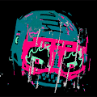
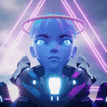

Incognito Incognito (ICON) 项目由 NFT 收藏家、艺术家和专业人士创建，旨在为 NFT 社区带来独特而特别的东西。该集合由 10,000 个随机生成的独特角色组成，这些角色作为 ERC-721 令牌生活在以太
JPG PEOPLE by Debbie Tea JPG People 是由 Debbie Tea 创建的 8,888 个基于单词的 AI 生成 NFT 的集合。在我们的人工大脑（我们称他为 Fred）的帮助下，我们将您的信息转换为独一无二的 JPG，该 JPG 由
JUNGLE FREAKS Jungle Freaks 是传奇的 Hustler Mag 漫画家 George Trosley 的 100% 手绘怪胎系列。这 10,000 个 Freaks 在以太坊区块链上生活和呼吸。 这一年是 2077 年，人类消失了，僵尸已经占领了城市并夺取了大量的军
Kaiju Kingz KaijuKingz 源于 CyberKongz 持有者和社区成员 OhDots 在他新成立的公司：Augminted Labs 下的思想。 KaijuKingz 希望通过促进 Web3 社区之间竞争和协作的协同机制来扩展其社区。该系列将
KCG KCG 是生活在 Metaverse 中的 3D 小猫，由才华横溢的 Nicolas Morel 和 Amandine Comes 制作。这两位法国国民曾为 Marvel、迪士尼、Neftflix、华纳兄弟等公司工作。 该系列有 300
Koala Intelligence Agency 总共有 10,000 只独特的考拉经过全面培训并准备部署。他们是伪装大师，在没有留下一丝证据的情况下从公众中筛选。 Koala Intelligence Agency NFT（简称 KIA）是 10000 个拥有个人
Kohi x eepmon CityLights Kōhī CityLights 是由数字艺术家 eepmon 创作的一个系列。受到东京充满活力的城市景观的启发，eepmon 经常前往大都市寻找他的创意灵感来源。 Kōhī CityLights 限量发
Kolobok Adventures Kolobok.io — 培育独特的 Kolobok 并进行冒险以获得 NFT 奖品！ 收集、交易、培育 Koloboks，然后将它们送去冒险以赢取奖品！ 由 CryptoLions 团队创建并由 SimpleAssets Standard 提供支持的游戏 K2
Kool Bar Kool Bar 由 2 个代币提供支持：KOOL 和 AID。 KOOL 是 Uniswap 上可交易的固定供应量的主要代币。 AID 是一种补充通胀代币，可以通过质押 KOOL 和 KOOL/ETH LP 代币来进行养殖。 Kool
KuddlyKoalas Kuddly Koalas 是一个包含 8,888 个 NFT 的可爱集合！ 每个铸币厂将把收入的 20% 捐赠给支持考拉栖息地的慈善机构。 Kuddly Koalas 收集的所有版税的 50% 也将捐赠给慈善机构。 公开发布后 48
Kumo x World Residents 一定比例的销售额用于儿童和心理健康慈善机构 我们的路线图包括儿童故事书、用于进化的 Kumochis（如宠物）、KxW Coins 和未来游戏开发。快来加入
Lamb Duhs Lamb Duhs Tron 是一个 NFT 集合，包含可爱而聪明的数字插图小羊头像，由 350K+ 可能的特征组合生成，具有丰富多样的面孔、服装和颜色。 Lamb Duhs Tron 托管在 Tron 区块链上。 Lamb Duhs Tron
Land DAO Genesis Land DAO 是同类艺术委员会 DAO 中的第一个，将知名艺术家带入 NFT 空间以获得独家 NFT 掉落。每个 Land DAO Genesis NFT 都是一种生产性资产，并且在我们的每个 NFT 启动之前空投具有
Land Loot Landloot 是 IMX 上的第一个项目 Launchpad，利用其软件技术和营销渠道，帮助第三方在 IMX 上启动项目。利用 Immutable X Gas-free Marketplace。 ImmutableX 上第一个完全
Last Dragons IMX 上的 2.222 Last Dragon NFT。 - 燃烧 - 代币经济学 - 育种 - 进化 - 龙石 - 游戏化 IMX 上的龙持有者专属俱乐部。 … $scales 令牌发布。每个 1st Gen Last Dragon 每天通过质押产生 10 美元的
Les Elefants Terribles Les Éléfants Terribles 是一个包含 5,313 位随机生成的创意幻想家的高概念合集，所有这些都是从 373 幅来自邪恶古怪的艺术、喜剧、时尚、电影、文学和音乐世界的
Lifestoryapp Lifestory 是一个 web3 项目。它从一个移动应用程序开始，您可以在其中上传时间线中的生活瞬间并制作 NFT！此外，我们还有一个 VR 沉浸式元宇宙 (The Lifevers
 MAX PAIN AND FRENS BY XCOPY Max Pain and Frens 是OG NFT 艺术家 @XCOPYART 在 Nifty Gateway 上推出的多件艺术品的集合。下降包括公开版、两次排名拍卖、一幅绘画和两个级别的刻录以赎回艺术品。开放版作品名为“
mcgoblin.wtf Mcgoblin.wtf 是原始 Goblintown.wtf NFT 项目的配套项目。 虽然包含有限的信息，但麦哥布林网站描绘了麦哥布林汉堡餐厅，其标志与麦当劳相似。 只需一个交互按钮，用户就可以点击“
Megapont Megapont 是一个虚构的宇宙，其中先进的科学突变加速了地球上每个物种的进化。地球目前是一个繁荣、繁华的天堂，世代相安无事。 Megapont Ape Club 是对 Megapont 世界中风景优美的
MekaVerse MekaVerse 是受日本动漫世界启发的 8,888 个生成 Mekas 的集合。 在遥远的未来，车手们在一个分为 4 个阵营的世界中战斗。 Originals Meka、Mirage、F9 和 Gadians 是统治这个星
 Meta Legends Meta Legends 代表 12345 个图例的集合，按稀有程度分类，并由数百个元素生成。 Legends 作为 ERC-721 代币存储在以太坊区块链上并托管在 IPFS 上。我们的目标是创建一个完整的生态系统
Meta Mice Underground 什么是 Meta Mice Underground ？ Meta Mice Underground 是 4,000 个手绘/生成的 NFT 的集合，它们位于以太坊区块链上，为持有者提供大量实用程序。创始人来自美国，并且完全被人盯上了。每个 MMU
MetaHero Universe: Generative Identities MetaHero Identities 是 MetaHero 宇宙中的英雄、恶棍和变种人的集合。核心合集包含 146 个完全匹配的 MetaHero 概念角色，包括两个特殊薄荷糖，由项目创意人员 Chris Wahl 和 Odious 共同设计。可通过兑
Metalk Chat2Earn Genesis Dialoger 预售现已上线 Stake a Dialoger are able to Mint 1 Metalk Chat2Ear Dialoger是Metalk Kingdom中唯一的Genesis Noble成员。 Dialoger 用户将有幸在 Metalk 上拥有独
Metasaurs by Dr. DMT DMT 博士的 Metasaurs 是生活在以太坊区块链上的 9,999 个独特的 Metasaurs 的集合，这一次，永远…… 我们很自豪能成为伙伴。 DMT 博士是谁？ 我是来自
Metaverse Travel Agency Metahelmet Metaverse Travel Agency (M.T.A.) 正在以太坊区块链上开创下一代可穿戴 NFT。我们的第一个系列包括 10,101 个随机组装的 Metahelmets。 每个 Metahelmet 都是独一无二的，但有些比其
Metroverse Metroverse 是一款基于以太坊的土地交易 NFT 策略游戏。收集、交易和抵押您的城市街区以获得 $MET 实用代币。 目前 94% 的城市街区都在 Metroverse Vault 中。 3840 个城市街区的独特所有者。
MiFuTo MFT MiFuTo 项目发挥了 NFT（Not Fungible Token）的概念，但使用 M 而不是 N，我们想在这种情况下回忆中指，中指这个词，我们不希望在 N 后面加上 NOT否定。
NFTheo NFTheo 是一组独特的数字收藏泰迪熊。每个 Theo 都是独一无二的。 只有 3000 个 Theos，由多个主题集和动画传奇 Theos 组成。 NFTheo 是存储在区块链上的 3000 个独特泰迪熊的集
NFTy Yacht Club NFTy 游艇有 5 种尺寸类别中的 1 种，该系列中有 20 种型号。NFTy Yacht 所有权附带超级游艇桥的使用权。超级游艇桥是 NFTy 游艇所有者在 Discord 上的专属聚会场所。它是
NFTZine NFTZine #001 是 Art101的第一个1,000 个独特、交互式和可打印的 ETH NFT 杂志的集合。 Art101 的 NFTZine 是一个交互式和可打印的 NFT Zine。NFTZines 是可生成
Niftyriots NiftyRiots 为您带来一个以前卫技术为正义事业打造的 NFT 系列。我们的最终目标是由来自边缘群体的艺术家在 Metaverse 中展示艺术。我们应用深度神经网络让世界了解不同的现